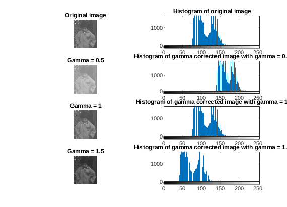
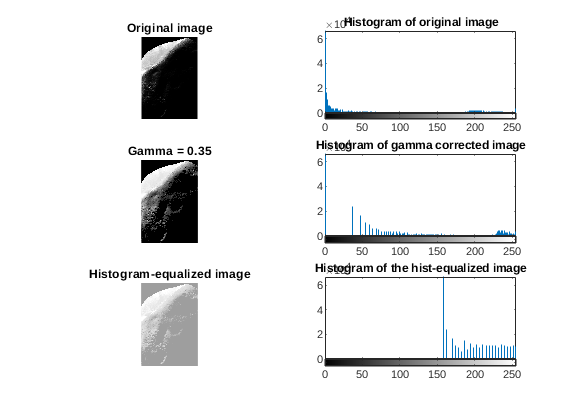
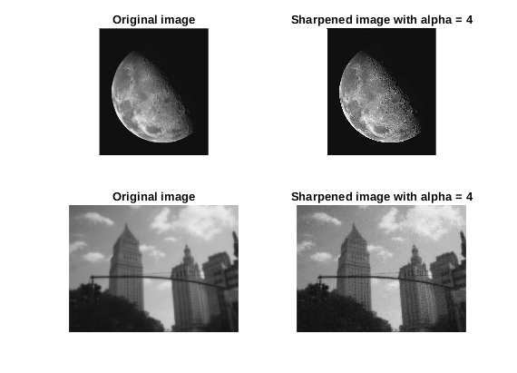
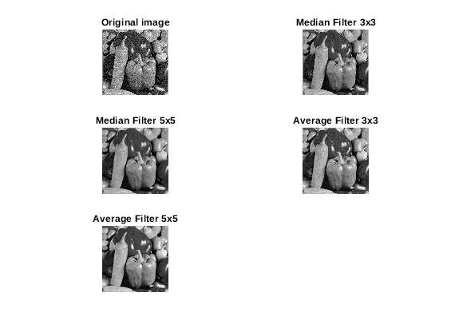
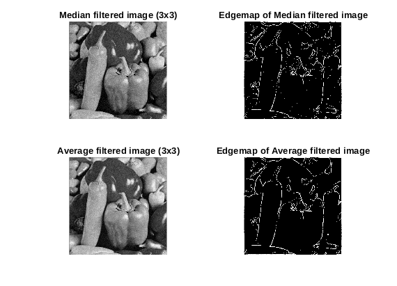
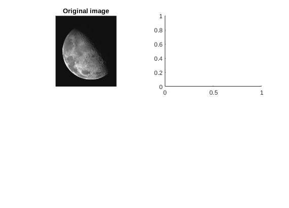

ECECS 435 - Homework 1
Contents
Tai Nguyen, Hieu Mai
clear; close all; clc
PART 1
If gamma = 1, the image stays unchanged. If gamma < 1, the image becomes brighter with lower contrast. If gamma > 1, the image becomes darker with higher contrast.
input1 = imread("pout.tif"); figure(1) subplot(4,2,1) imshow(input1) title('Original image') subplot(4,2,2) imhist(input1) title('Histogram of original image') subplot(4,2,3) output1_1 = gamma_correction(input1, 0.5); imshow(output1_1) title('Gamma = 0.5') subplot(4,2,4) imhist(output1_1) title('Histogram of gamma corrected image with gamma = 0.5') subplot(4,2,5) output1_2 = gamma_correction(input1, 1); imshow(output1_2) title('Gamma = 1') subplot(4,2,6) imhist(output1_2) title('Histogram of gamma corrected image with gamma = 1') subplot(4,2,7) output1_3 = gamma_correction(input1, 1.5); imshow(output1_3) title('Gamma = 1.5') subplot(4,2,8) imhist(output1_3) title('Histogram of gamma corrected image with gamma = 1.5')
The image processed with the gamma correction function has better contrast than the one obtained through histogram equalization, but the latter is brighter.
input2 = imread("MoonPhobos.tif"); figure(2) subplot(3,2,1) imshow(input2) title("Original image") subplot(3,2,2) imhist(input2) title("Histogram of original image") subplot(3,2,3) output2_1 = gamma_correction(input2, 0.35); imshow(output2_1) title("Gamma = 0.35") subplot(3,2,4) imhist(output2_1) title("Histogram of gamma corrected image"); subplot(3,2,5) output2_2 = histeq(input2); imshow(output2_2) title("Histogram-equalized image"); subplot(3,2,6) imhist(output2_2) title("Histogram of the hist-equalized image")
PART 2
It is impossible to completely recover the in-focus image with this filter, because of the unwanted artifacts created around the regions that are not edges, causing an unsmooth transitions between some regions.
input3 = imread("moon.tiff"); input4 = imread("outoffocus.tif"); figure(3) subplot(2,2,1) imshow(input3) title("Original image") subplot(2,2,2) output3 = sharpening(input3, 4); imshow(output3) title("Sharpened image with alpha = 4") subplot(2,2,3) imshow(input4) title("Original image") subplot(2,2,4) output4 = sharpening(input4, 10); imshow(output4) title("Sharpened image with alpha = 4")
PART 3
The average filter is good at softening and removing iid noise from images, while the median filter is good for removing pepper noise. Depending on the image that needs to be filter, generally a high filter size will result in a blurry image.
input5 = imread("peppersNoise1.tiff"); input6 = imread("peppersNoise2.tiff"); avg_filt3x3 = ones(3,3)/9; avg_filt5x5 = ones(5,5)/25; figure(4) subplot(3,2,1) imshow(input5) title("Original image") subplot(3,2,2) output5_1 = medfilt2(input5, [3,3]); imshow(output5_1) title("Median Filter 3x3") subplot(3,2,3) output5_2 = medfilt2(input5, [5,5]); imshow(output5_2) title("Median Filter 5x5") subplot(3,2,4) output5_3 = conv2(single(input5), avg_filt3x3, 'same'); imshow(output5_3, []) title("Average Filter 3x3") subplot(3,2,5) output5_4 = conv2(single(input5), avg_filt5x5, 'same'); imshow(output5_4, []) title("Average Filter 5x5")
figure(5) subplot(3,2,1) imshow(input6) title("Original image") subplot(3,2,2) output6_1 = medfilt2(input6, [3,3]); imshow(output6_1) title("Median Filter 3x3") subplot(3,2,3) output6_2 = medfilt2(input6, [5,5]); imshow(output6_2) title("Median Filter 5x5") subplot(3,2,4) output6_3 = conv2(single(input6), avg_filt3x3, 'same'); imshow(output6_3, []) title("Average Filter 3x3") subplot(3,2,5) output6_4 = conv2(single(input6), avg_filt5x5, 'same'); imshow(output6_4, []) title("Average Filter 5x5")
The edgemap of the average filtered image looks cleaner than the one processed with the median filter, because the average filter evens out the transition of pixels from high to low values, preserving the features around the edges, while the median filter leaves pepper noise on the image.
sobel_x = [-1,0,1; -2,0,2; -1,0,1]; sobel_y = [-1,-2,-1; 0,0,0; 1,2,1]; threshold = 160; figure(6) subplot(2,2,1) imshow(output5_1) title("Median filtered image (3x3)") subplot(2,2,2) g_x = conv2(single(output5_1), sobel_x, 'same'); g_y = conv2(single(output5_1), sobel_y, 'same'); G_1 = uint8(sqrt(g_x.^2 + g_y.^2)); G_1(G_1 < threshold) = 0; imshow(G_1, []) title("Edgemap of Median filtered image") subplot(2,2,3) imshow(output5_3, []) title("Average filtered image (3x3)") subplot(2,2,4) g_x = conv2(single(output5_3), sobel_x, 'same'); g_y = conv2(single(output5_3), sobel_y, 'same'); G_2 = uint8(sqrt(g_x.^2 + g_y.^2)); G_2(G_2 < threshold) = 0; imshow(G_2, []) title("Edgemap of Average filtered image")
function output = gamma_correction(input, gamma) % This function perform gamma correction on an input image, represented % as a matlab 2D matrix. % % input: 2D matrix of the image % alpha: scalar defining how stretched is the pixel histogram of the % image % output: 2D matrix of the gamma-corrected image output = uint8(255.*(((double(input))./255).^gamma)); end
function output = sharpening(input, alpha) % This function perform image sharpening on an input image by extractin % g its high frequency content and add such content back to the % original image with a scaling factor `alpha` % % input: 2D matrix of the image % alpha: scaling factor filter = [0,-0.25,0;-0.25,1,-0.25;0,-0.25,0]; output = uint8(double(input) + alpha*conv2(input, filter, 'same')); end